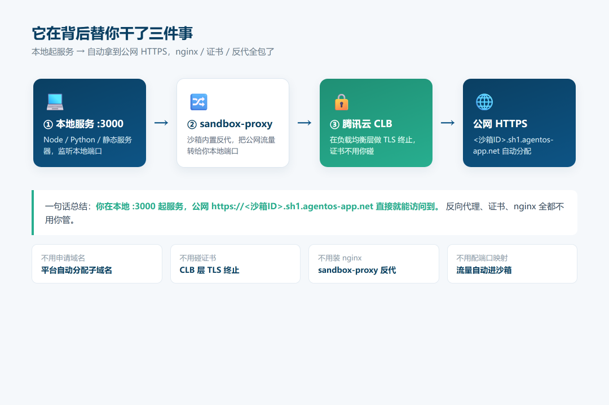
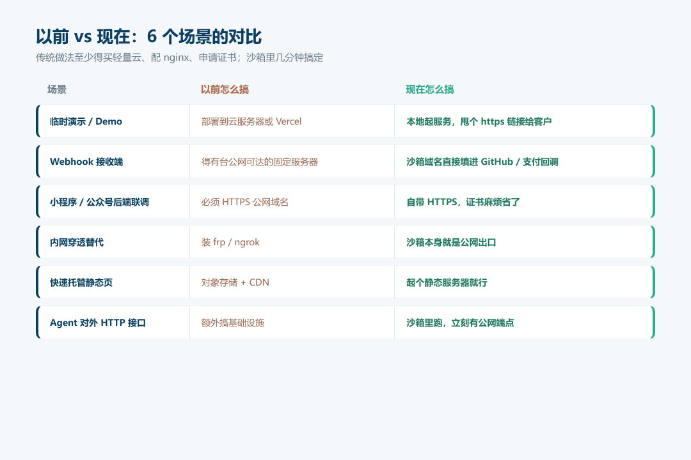
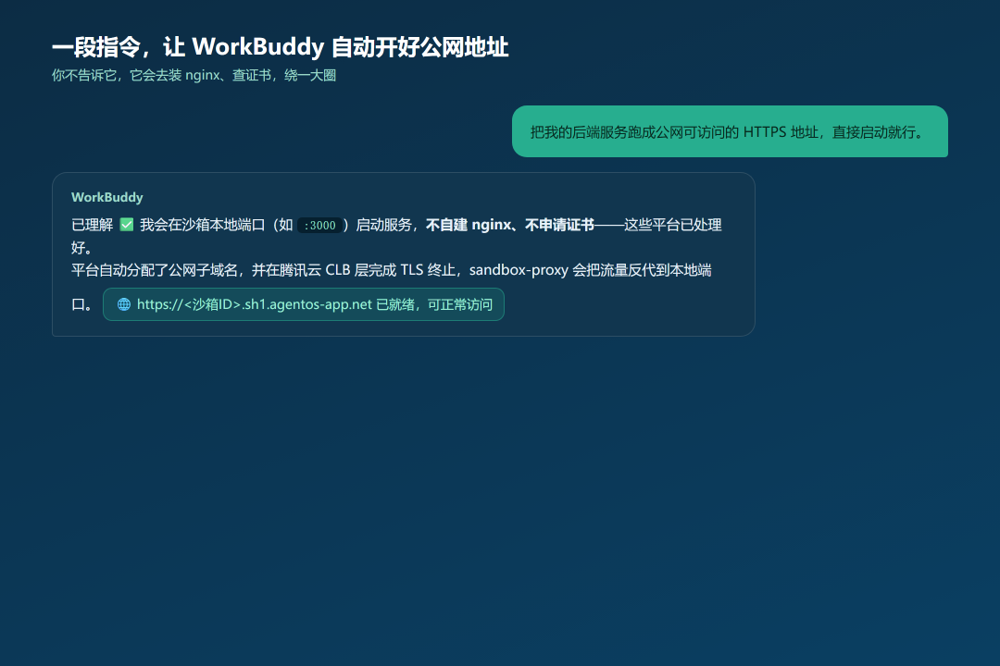

多数人用 WorkBuddy 就三件套：写代码、跑脚本、出报告，完事关掉。
但它的沙箱本身就是一台带公网出口的小服务器。你在本地起个服务，它就自动给你配好 HTTPS 公网域名，nginx 和证书都不用碰。
知道这个的人不多。有时候连 WorkBuddy 自己都没意识到还能这么干。下面把原理、用法和一段可以直接复制给它的话一次说完。
它到底怎么通的
沙箱里起 :3000 监听，平台在背后做三件事：
自动分配 <沙箱ID>.sh1.agentos-app.net这样的 HTTPS 子域名。腾讯云 CLB 在负载均衡层做 TLS 终止，证书不用你管。 沙箱里的 sandbox-proxy把流量反代到你本地端口。

结果就是：本地起服务，公网 https://<沙箱ID>.sh1.agentos-app.net 直接能访问。反向代理、证书、nginx 全包。
4 步跑通
起本地服务。Node、Python、Java、静态服务器都可以，监听一个端口。 找到沙箱分配的公网域名，一般在沙箱信息或任务面板里。 浏览器直接打开 https://<域名>，通了。换成你的真实后端也行，只要监听本地端口。
能干啥
这些场景以前至少得买轻量云、配 nginx、申请证书。现在沙箱里几分钟搞定。

另外，这种「会话在、服务在」的特性其实挺适合阅后即焚的演示。沙箱回收，链接自动失效，反而安全。
保活
沙箱按会话存在，会话一断服务就没了。想多撑几天，有几个办法：
别让会话空转。挂一个周期性心跳进程，比如 while sleep 60; do date; done。服务后台跑。用 nohup node server.js > app.log 2>&1 &，再disown解绑终端。让 WorkBuddy 自己盯着。直接让它帮你挂心跳、看域名通不通。 真要 7×24，还是上正经云服务器或容器。保活只是拖时间，不是买保险。
几个坑
沙箱活着服务才活着，别当生产环境。 别往里放机密和长期数据。 端口、限流以平台实际为准。 域名是平台分配的，不能自定义品牌域名。
一段可以直接复制的话
最省事的方式，是把意图直接告诉它，省得它跑去查 nginx、申请证书。

我需要把一个后端服务跑成公网可访问的 HTTPS 地址。请直接在沙箱本地端口（比如 :3000）启动服务即可——你的沙箱环境会自动分配
<沙箱ID>.sh1.agentos-app.net的 HTTPS 公网子域名，在腾讯云 CLB 层做 TLS 终止，再由沙箱内置的 sandbox-proxy 反代到本地端口。不用你自建 nginx、配置反向代理或申请证书，这些平台已经处理好了。启动后告诉我公网 https 域名，并验证能访问。
这段它读完基本不会绕弯子。
结尾
下次要临时把某个后端亮到公网上，先别急着买服务器。把上面那段话丢给 WorkBuddy，看它能不能直接跑通。
想要可复制版的指令卡，后台回【AI工具】，我把整理好的发你网盘。你用它跑过什么有意思的服务？评论区聊聊。